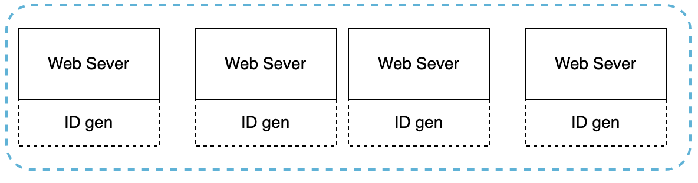

What is a UUID and Why Use It?¶
A UUID—which stands for Universally Unique Identifier—is a 128-bit number used to uniquely identify information in computer systems. What makes UUIDs so appealing is their ability to produce IDs with an extremely low chance of duplication. To put that in perspective, if you were to generate 1 billion UUIDs every single second for 100 years, the odds of getting even one duplicate would only hit around 50%. In other words, the chance of “collision”—two identical IDs—is practically zero.
Here’s what a UUID looks like:
09c93e62-50b4-468d-bf8a-c07e1040bfb2
UUIDs can be generated by individual machines (or servers) completely independently, without needing to check in with each other. That’s a huge advantage.
How Does It Work?¶
In systems using UUIDs, every web server has its own ID generator. These servers create their own IDs whenever they need to, without relying on any central coordinator. That means there’s no risk of servers “stepping on each other’s toes” when generating new IDs.
Here’s the basic idea:
- Server A generates its IDs.
- Server B generates its IDs.
- Neither one has to ask permission or wait for the other—both just do their own thing.
It’s clean, simple, and fast. 
The Upsides¶
- Simplicity: Generating UUIDs is dead easy. Since servers don’t need to talk to each other, there’s no messy synchronization or waiting around.
- Scalability: Adding more servers? No problem. Each one just generates its own IDs, so the system scales naturally as you grow.
The Downsides¶
Of course, UUIDs aren’t perfect. Here are a few trade-offs:
- They’re too long: UUIDs are 128 bits, but sometimes you only need a smaller 64-bit ID.
- They’re random: UUIDs don’t increase with time. If you need IDs that follow an order (like 1, 2, 3...), UUIDs won’t work well.
- Not always numeric: If you’re looking for simple numbers as IDs, UUIDs might disappoint you—they come with letters and dashes, which can be less clean for some systems.
In short, UUIDs are great for systems that need unique IDs without any fuss. They’re easy to use, and servers can generate them independently, which keeps things fast and scalable. The only downside? They might be overkill for simpler requirements.